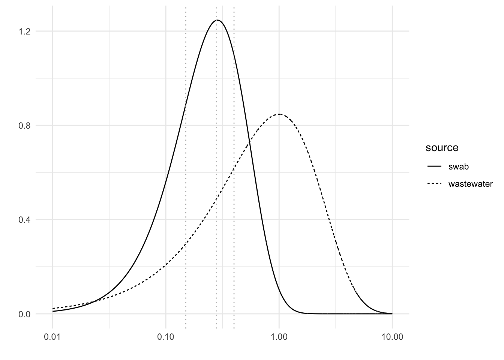
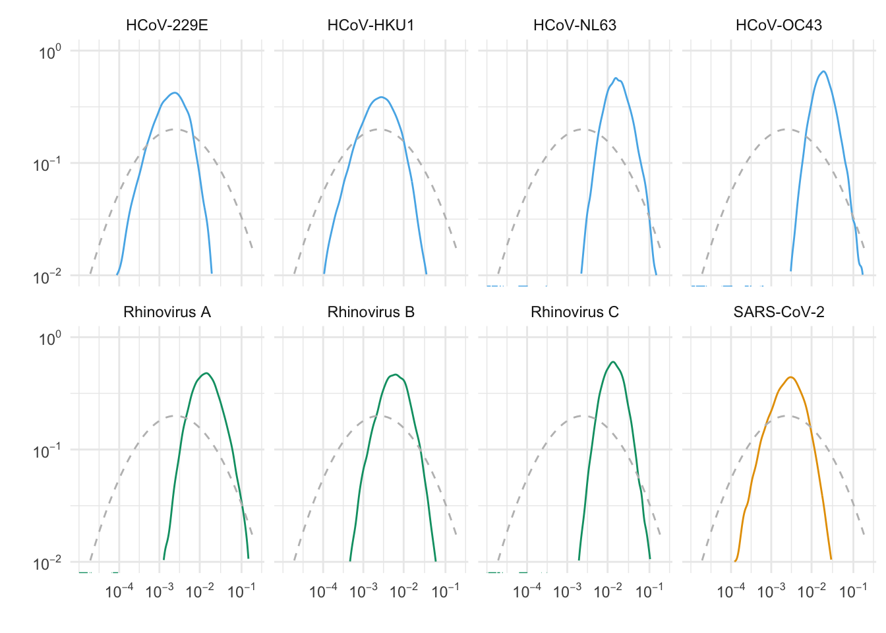
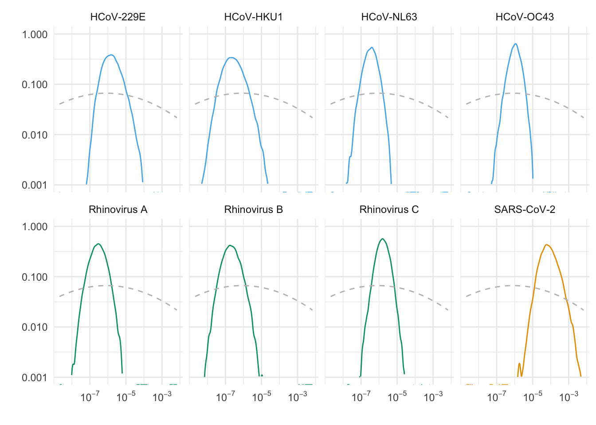
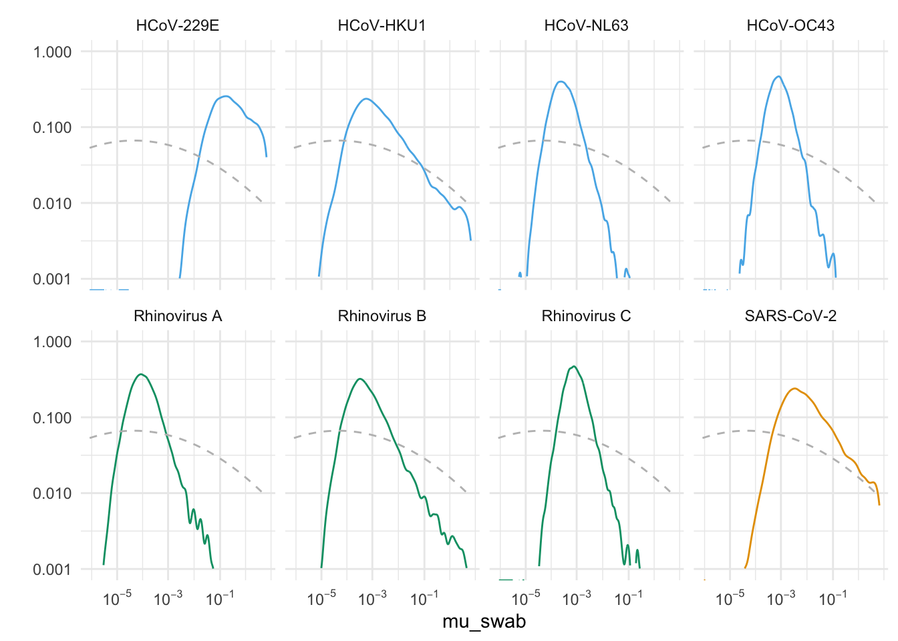
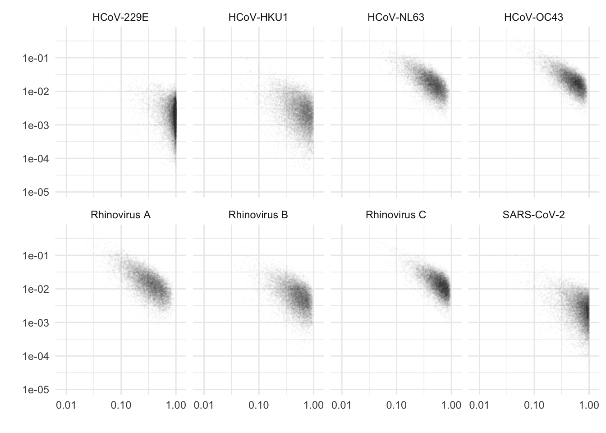

We define a Bayesian model to jointly estimate viral prevalence and \(RA_p(1\%)\) from sequencing of pooled swab samples and wastewater samples. Joint estimation allows us to propagate our uncertainty in the prevalence to uncertainty in \(RA_p(1\%)\).
We designed the model to account for the following factors:
We do not know the true number of swabs from infected people in each pool.
We do not know the sensitivity of our swab sequencing to detect each virus, but we expect it to increase with sequencing depth.
We expect the viral read counts to be overdispersed relative to pure counting (Poisson) noise. The amount of overdispersion is likely differ between swabs and wastewater.
For each virus, our model takes as input data the total read depth and number of viral reads observed in each swab pool and wastewater sample, and the number of swabs in each swab pool. In overview:
Each swab in each pool comes from an infected person with probability equal to the prevalence.
Each swab from an infected person contributes a random number of viral reads to its pool drawn from a negative binomial distribution. The average number of viral reads contributed is proportional to the sequencing depth and inversely proportional to the number of swabs in the pool.
Each wastewater sample has a random number of viral reads drawn from a negative binomial distribution. The average number of viral reads is proportional to the prevalence and the sequencing depth.
In the following sections, we give the technical definition of the model and the prior distributions of all parameters, then describe our model fitting and checking procedures.
Swab pool read counts
Let \(p\) be the prevalence of a virus. For each swab pool \(i\), let \(s_i\) be the number of swabs and \(s_{+,i}\) be the number of swabs from infected people. Assuming that each person has an independent probability of being infected, \[s_{+, i} \sim \text{Binomial}(s_i, p)\]
Let \(v_{swab,i}\) be the number of viral reads in swab pool \(i\). We assume that the viral reads from different swabs are independent and combine linearly so that \[\mathbb{E}[v_{swab,i} | s_{+,i}] = r_i \, \frac{s_{+,i}}{s_i} \, \mu_{swab} \equiv \lambda_i,\] where \(r_i\) is the total read depth in pool \(i\) and \(\mu_{swab}\) is a relative abundance factor equal to the the expected relative abundance of the virus in an infected swab. Note that the expected number of viral reads is proportional to the fraction of swabs from infected people.
To account for counting noise as well as overdispersion from, e.g., variation in swab quality, we use a negative binomial distribution for viral read counts. Using Stan’s (mean, overdispersion) parameterization for the negative binomial, \[v_{swab, i} | s_{+,i} \sim \text{NegativeBinomial}(\lambda_i , s_{+,i} \, \phi_{swab}).\] Here, \(\phi_{swab}\) is the inverse-overdispersion parameter for when one swab is from an infected person. The smaller \(\phi_{swab}\) is, the more overdispersed the read count distribution is relative to Poisson. (The factor of \(s_{+,i}\) multiplying \(\phi_{swab}\) is a consequence of adding reads from different swabs.) In the limit where read depth is high so that \(\lambda_i \gg s_{+,i}\phi_{swab}\), the coefficient of variation of \(v_{swab,i}\) is given by \[CV \approx \frac{1}{\sqrt{s_{+,i} \, \phi_{swab}}}.\] Thus, our model allows for substantial noise from low-quality swabs and other sources, even when the sequencing depth is high.
Wastewater read counts
We also use a negative binomial distribution for our wastewater reads. For wastewater sample \(j\), the number of viral reads is \[v_{ww, i} \sim \text{NegativeBinomial}(r_j \, p \, \mu_{ww}, \phi_{ww})\] where \(r_j\) is the total read depth, \(p\) is the same prevalence as for swab samples, \(\mu_{ww}\) is a relative abundance factor, and \(\phi_{ww}\) is the inverse-overdispersion parameter for wastewater sequencing. The relative abundance factor \(\mu_{ww}\) is defined so that the expected relative abundance in a wastewater sample, when the prevalence is \(p\), is given by \(p \cdot \mu_{ww}\). Thus, in this parameterization, \(RA_p(1\%) = 0.01 \cdot \mu_{ww}\).
Prior Distributions
Our model has five parameters: one for the prevalence, two for the expected relative abundance factors in the two sample sources, and two for the read count overdispersion. We chose prior distributions that reflect several orders of magnitude of uncertainty in these parameters. We confirmed, using prior predictive checks, that the observed number of samples with zero reads, the largest viral read count, and the total viral read count for each virus are within the probable ranges under the priors.
Prevalence
The prevalence of respiratory viruses is both variable and unknown, so we put a prior on \(p\) that spans several orders of magnitude.
The left tail of our prior controls the probability that a virus is too rare to observe in our swab sampling. We designed our model to apply to all viruses found in wastewater (though we subsequenctly restricted our analysis to those with high swab read counts). Because we observed several viruses with zero viral reads in swab data—including a number of respiratory viruses that we did not see in our wastewater data—we chose a prior that puts significant probability on prevalence below our swab sampling detection limit. We collected 547 total swabs, so our best-case detection limit is roughly 0.2%. (The exact shape of the left tail of the prior should not affect our prevalence estimates for viruses observed in at least one swab sample because the likelihood function will sharply constrain the posterior probability of prevalence below 0.2%.)
The right tail of the prior sets the upper bound of our prevalence estimates when our sensitivity is low. We assume that it’s unlikely, but not impossible, that the prevalence of a single respiratory virus is much above 10%.
With these considerations as guides, we put a logit-Normal prior on \(p\): \[\text{logit}(p) \sim \text{Normal}(-6, 2).\] With this distribution, which constrains the values to be between zero and one, the prior median is 0.25%, the 85th percentile is 1.8% and the 95th percentile is 12%.
Prior distribution of prevalence. Note the logistic spacing of the x-axis.
This prior is broad enough to permit the true prevalence to be much higher than the pool positivity rate would suggest, allowing for significant false negative rate. For example, the coronavirus or rhinovirus with the fewest swab reads is Rhinovirus A with nine reads across three pools. Assuming perfect sensitivity, the maximum likelihood prevalence for Rhinovirus A would be 0.7%. Our prior assigns a 9% probability that the true prevalence is more than five times higher than this, i.e., a false negative rate over 83%.
Relative abundance factors
For each sample type, the expected relative abundance is the product of the prevalence and a relative abundance factor \(\mu\). For wastewater sequencing, the expected relative abundance at prevalence \(p\) is \(p\, \mu_{ww}\), so that \(RA_p(1\%) = 0.01 \mu_{ww}\). For pooled swabs, the expected relative abundance is \(p \, \mu_{swab}\), where \(\mu_{swab}\) is the expected relative abundance in a swab from an infected person. Since these parameters represent proportions we use logit-normal priors to constrain their values between zero and one, as with the prevalence.
Because we do not have much prior information about the relative abundance factors, we chose priors that span many orders of magnitude. Our previous estimates for Influenza A and SARS-CoV-2 in our wastewater data suggest a range of \(\mu_{ww}\) from 1e-8 to 1e-4. We would like to include more uncertainty than this range, so we use:
\[\text{logit}(\mu_{ww}) \sim \text{Normal}(-14, 6)\] With these parameters, the median $_{ww} is 8e-7 compared to our previous Flu A estimate of 1e-6. The prior allows for a lot of uncertainty: 96% of the probability is between 5e-12 and 0.1, spanning more than 10 orders of magnitude.
Because we are studying respiratory viruses, we expect swabs to have higher relative abundance than wastewater at the same prevalence. Accordingly, we’ll shift the prior for \(\mu_{swab}\) to the right relative to \(\mu_{ww}\). However, we don’t want to make this assumption too strongly, so we’ll shift the mean by less than a standard deviation (keeping the standard deviation constant) to: \[\text{logit}(\mu_{swab}) \sim \text{Normal}(-10, 6).\] With these priors, the median and geometric mean of \(\frac{\mu_{swab}}{\mu_{ww}} \approx 60\) and the probability that a given virus’s \(\mu_{swab} > \mu_{ww}\) is \(\approx 70\%\).
Prior distibutions of relative abundance factors \(\mu\). Note the logistic spacing of the x-axis.
Overdispersion
Finally, we have the inverse-overdispersion parameters for the read counts: \(\phi_{swab}\) and \(\phi_{ww}\). We have little prior information about these parameters except that they must be greater than zero, and we expect overdispersion relative to Poisson in both sample sources. Unfortunately, with only twelve samples of each type, we do not expect our data to give us much information about \(\phi\) either. (This is born out: our posterior distributions are close to the priors, especially for \(\phi_{swab}\), see below.)
For wastewater, we use a standard weakly informative prior for non-negative dimensionless quantities: \[\phi_{ww} \sim \text{Gamma}(1, 1) = \text{Exponential}(1).\] When viral read counts are large, their coefficient of variation is approximately \(\frac{1}{\sqrt{\phi_{ww}}}\). Our prior allows the CV to be either larger than one (\(\phi_{ww} < 1\)) or smaller than one (\(\phi_{ww} > 1\)).
In practice, \(\phi_{ww}\) does not appear to have much effect on our inference of \(RA_p(1\%)\). Plotting the the joint posterior distributions of \(\mu_{ww}\) and \(\phi_{ww}\) shows them to be approximately independent (not shown).
In contrast, \(\phi_{swab}\) is important for our inference of prevalence (and thus \(RA_p(1\%))\). In our model, \(\phi_{swab}\) determines the false-negative rate when the read depth is high. When one swab comes from an infected person, the probability of getting zero viral reads in our negative binomial model is \[P(v = 0 | s_+ = 1) = {\left(\frac{\phi_{swab}}{\lambda + \phi_{swab}}\right)}^{\phi_{swab}}, \tag{1}\] where \(\lambda\) is the expected number of viral reads. If \(\phi_{swab} < 1\), this probability can be substantial even for large \(\lambda\). The higher the false positive rate, the larger \(p\) has to be to account for the same data.
We expect that one major source of false negatives is variation in how well subjects swab themselves. Poor swabs can contribute zero viral reads, even with deep sequencing. Accordingly, we selected a prior that expresses a high degree of uncertainty about the probability of getting zero reads from an infected swab at high sequencing depth: \[\phi_{swab} \sim \text{Gamma}(2, 7),\] which looks like:
Code
prior_phi_swab <-function(x) dgamma(x, shape_phi_swab, rate_phi_swab)prior_phi_ww <-function(x) dgamma(x, shape_phi_ww, rate_phi_ww)crossing(source =factor(c("swab", "wastewater")),phi =seq(0.01, 10, 0.001)) %>%mutate(prior =if_else(source =="swab", prior_phi_swab(phi), prior_phi_ww(phi)),# Jacobian adjustment so that area under the curve gives probabilities# when the x-scale is log10 transformed (see setup block for explaination)prior_log10 = prior * phi *log(10), ) %>%ggplot(aes(phi, prior_log10, linetype = source)) +geom_line() +geom_vline(xintercept =c(0.15, 0.28, 0.4), linetype ="dotted", color ="grey") +scale_x_log10() +labs(y ="", x ="")

Prior distributions of inverse-overdispersion \(\phi\)
We can use Equation 1 to calculate the implied probability of false negatives for a given sequencing depth and relative abundance factor. As a proxy for “deep sequencing”, assume that we sequence deeply enough that we expect to find 100 viral reads conditional on finding at least one. Then, the dotted grey lines show the values of \(\phi_{swab}\) that imply the probability of getting zero viral reads from a pool containing one swab from an infected person is (from left to right) 0.4, 0.2, and 0.1. The prior thus allows for a broad range of false negative rates.
Model fitting
We implemented and fit the model using the rstan interface to the Stan programming language. We fit the model independently to each virus observed in the wastewater data. For each virus, we ran four chains for 4,000 iterations each with a warm-up of 1,000 iterations.
After fitting, we checked for convergence problems, which indicate that the program had difficulty sampling from the posterior distribution. For all viruses, including those with few or no swab reads, we confirmed that the chains mixed well (rhat < 1.005) and that there were no divergent transitions.
Model checking
Posterior predictive checks
We performed posterior predictive checks to test that the fitted model captures the general features of the data. For each posterior sample of the parameters, we simulated a dataset under the model. For each virus and sample source, we calculated the posterior predictive distribution of
The number of samples containing viral reads
The total viral reads
The maximum viral reads in a sample
The standard deviation of viral reads.
We visually compared these distributions to the observed quantities. We did not find any large or systematic deviations from the posterior predictive distributions, indicating that the model predicts these features of the data well.
Posterior distributions
We examined our posterior distributions to understand the influence of our priors and the structure of our model on our inferences of prevalence and \(\mu_{ww}\) (and thus \(RA_p(1\%)\)).
The influence of the prior distributions of prevalence and \(\mu_{ww}\) is weak
We intended our priors on \(p\) and \(\mu_{ww}\) to be weakly informative so that our data would constrain the posterior distributions relative to the priors.
For coronaviruses and rhinoviruses, the posterior distributions of these parameters are narrow compared to their priors:
Code
posteriors <-read_tsv(here(tables_dir, "posteriors.tsv")) %>%filter(group %in%c("Coronaviruses (SARS-CoV-2)", "Coronaviruses (seasonal)", "Rhinoviruses"))# To get a logit-spaced x-axis for both the prior and the posterior,# Plot logit p on the x-axis, but change the x-tick labels# to p on the natural scalebreaks <-10^seq(-4, -1, 1)posteriors %>%ggplot(aes(logit_p, color=group)) +geom_density() +prior_density(seq(-12, 4, length.out=100), prior_logit_p) +scale_x_continuous(limits =qlogis(c(1e-5, 2e-1)),breaks =qlogis(breaks),labels =scientific(breaks), ) +facet_wrap(vars(species), ncol =4) +scale_y_continuous(transform ="log10",limits =c(1e-2, 1),breaks =10^seq(0,-2),labels = scientific ) +labs(x ="", y ="") +theme(legend.position ="")

Posterior (solid) and prior (dashed) distributions of prevalence
Code
# Plot logit mu on the x-axis, but change the x-tick labels to mu on the# untransformed scalebreaks <-10^seq(-7, -3, 2)posteriors %>%ggplot(aes(logit_mu_ww, color = group)) +geom_density() +prior_density(seq(-20, -5, length.out =100), prior_logit_mu_ww) +scale_x_continuous(limits =c(-20, -5),breaks =qlogis(breaks),labels =scientific(breaks) ) +facet_wrap(vars(species), ncol =4) +scale_y_continuous(transform ="log10", limits =c(1e-3, 1)) +labs(y ="", x ="") +theme(legend.position ="")

Posterior (solid) and prior (dashed) distributions of \(\mu_{ww}\)
This suggests that the data, interpreted in light of our model and the priors on the other parameters, effectively constrains the posteriors of these parameters.
For viruses with zero or one read in swab samples (not shown), the posterior distributions were dominated by the priors because the model was not able to constrain the false negative rate of swab sequencing.
Uncertainty in prevalence propagates to uncertainty in \(\mu_{ww}\)
Because the expected relative abundance of viral reads in wastewater is the product of \(p\) and \(\mu_{ww}\), we expect uncertainty in prevalence to contribute to uncertainty in \(\mu_{ww}\) (and thus \(RA_p(1\%)\)).
Indeed, posterior uncertainty in \(p\) explains much of the posterior uncertainty in \(\mu_{ww}\). Plotting the joint posterior distribution of these parameters shows a tight correlation:
Fraction of posterior variance in \(\log \mu_{ww}\) explained by \(\log p\)
For all viruses, at least 80% of the posterior variance in \(\log \mu_ww\) is explained by variance in \(\log p\).
Uncertainty in the true positive rate contributes to uncertainty in prevalence
Much of our posterior uncertainty in the prevalence comes from our uncertainty about the true positive rate of swab sequencing: the probability that a swab pool will have at least one viral read when it contains at least one swab from an infected person. This probability, which is one minus the false negative rate, is controlled by the parameters \(\mu_{swab}\) and \(\phi_{swab}\).
For the coronaviruses and rhinoviruses, we observe enough reads to estimate \(\mu_{swab}\):
Code
# Plot logit mu on the x-axis, but change the x-tick labels to mu on the# untransformed scalebreaks <-10^seq(-5, -1, 2)posteriors %>%ggplot(aes(logit_mu_swab, color = group)) +geom_density() +prior_density(seq(-16, 2, length.out =100), prior_logit_mu_swab) +scale_x_continuous(limits =c(-14, 2),breaks =qlogis(breaks),labels =scientific(breaks) ) +facet_wrap(vars(species), ncol =4) +scale_y_continuous(transform ="log10", limits =c(1e-3, 1)) +labs(y ="", x ="mu_swab") +theme(legend.position ="")

On the other hand, the data provide very little information about \(\phi_{swab}\) relative to the priors:
Because the data does not constrain \(\phi_{swab}\) very much, our prior \(\phi_{swab}\) has a meaningful impact on our estimates.
To see the combined effect of \(\mu_{swab}\) and \(\phi_{swab}\) on our prevalence estimates, we can transform the posterior samples of \(\mu_{swab}\) and \(\phi_{swab}\) into the posterior samples of the true positive rate:
\[\text{true positive rate} \approx 1 - P(v = 0 | s_+ = 1), \] where we make the approximation that most pools have either zero or one swab from an infected person. \(P(v = 0 | s_+ = 1)\) depends on \(\phi_{swab}\), \(\mu_{swab}\), the total read depth and the number of swabs in the pool according to Equation 1. Because our pools vary in number of swabs and read depth, we average the true positive rate over pools.
Code
# For each posterior sample and each swab pool, calculate the probability of# getting zero reads if a single swab comes from an infected person.# Then estimate the true positive rate in each posterior sample# as the average across pools of 1 - p(0).true_positive_rate <- posteriors %>%mutate(posterior_sample =row_number()) %>%crossing(swab_metadata) %>%mutate(lambda = mu_swab * all_reads / pool_size,p0 = (phi_swab / (lambda + phi_swab)) ^ phi_swab, ) %>%summarise(p =first(p),tpr =1-mean(p0),.by =c(species, group, posterior_sample), )true_positive_rate %>%ggplot(aes(tpr, p)) +geom_point(alpha =0.01, size =0.1) +scale_x_log10(limits =c(8e-3, 1.2)) +scale_y_log10() +facet_wrap(~species, ncol =4) +theme(legend.position="none") +labs(y ="", x ="")

Posterior prevalence vs posterior true positive rate
\(R^2\) of \(\log p\) vs \(\log \text{true positive rate}\)
When the true positive rate is lower (i.e., the false negative rate is higher), the estimated prevalence is higher to account for the observed positive pools. The median R-squared between log posterior prevalence and log posterior true positive rate is 0.3, implying that about a third of the uncertainty in prevalence comes from uncertainty in the true positive rate.